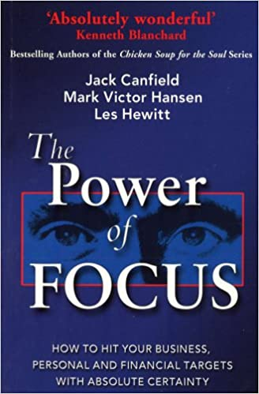

Back to home
Back to about
Audiobooks

This is a great guide for getting your act in order and focusing on your true priorities.
The power of Focus is important and must-read book for anyone who wants to succeed in anything.
This is an outstanding book that shows you how to develop new skills in every part of life.
It's an inspiring and practical book which pushes you to implement what you learned at the end of every chapter.
It not only covers the personal targets but also guides you to implement in the business as the title says, "Hit your Business, Personal and Financial targets with Confidence and Certainty".
After reading this book, I found that being able to focus on what I really wanted in my life made me know what I should do each day to accomplish my goal. There are lots of strategies and tips in this book that actually help and they are not hard to follow at all.
Let me share with you 8 points from the book that I think you’ll appreciate:
- Each week take one day completely off. No business phone, no emails. No work. Just make it your day to think and plan. But don’t actually do any business work.
- Spend time with your family. At least one day each week should be a full family day. If you can’t do that, be sure to spend as much time as you possibly can each day in the mornings or evenings with the people you love and care about.
- Before going to sleep, create an outline of what you want to accomplish the following day. Not in your head, write it down. Do that from Monday to Friday.
- Find one thing that makes your day better. Each of us has things that we enjoy doing. Make sure you do something you enjoy each day. Whatever it is. Treat yourself.
- Take a nap. The authors suggest taking 25 minutes to sleep mid day during the week. This will re-charge you and get you more focused. Especially if you’re waking up between 5:30-6:30am each morning.
- Ask more. Don’t be scared of rejection. You need to ask people in all situations for what you want. It’s what kids do. It’s what works. Ask and you’ll often get.
- Be consistent and persistent. Don’t give up on something after only a couple of tries. It can often take years of toiling away to make you an ‘overnight success’.
- Keep your promises. Most people don’t follow through and do what they say. If you do, make sure you promote that fact. In emails or calls to clients, let them know that you got ____ done “as promised.” That will reinforce your commitment.
Buy it